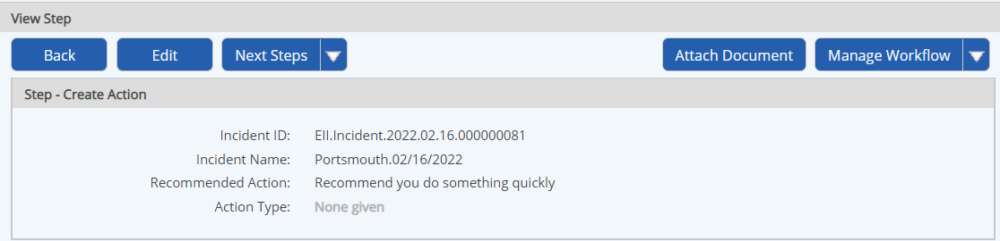

From the Workflow Overview, you can see the steps completed so far, who the step was assigned to, the assignor, the assignee’s role, date completed and action taken.
You can select any step to view further details, including the step form fields and values entered.
If you have the permissions, you may also:
Edit the step form to change field values
View and add comments
Initiate a child workflow (depending on workflow configuration)
Permission to view or edit steps is dependent on the permissions granted to any role you are a member of in the workflow. Unless you have specific view or edit permissions, you may only have access to steps assigned to you or to a role you to which you belong.
To view a Step:
Open the Workflow Overview.
From the Workflows panel on a dashboard, select the Workflow Name link.
From the Workflows page (Tasks and Workflows page), right click the workflow and choose View.
From the Calendar, right click the workflow icon and choose View.
In the Steps list, select the step.
The step form is displayed (in view or edit mode, depending on your permissions). The step form shows the field values as completed by the assignee.

If the workflow allows the creation of child workflows at this step, links to initiate new workflow(s) are displayed. See Create a Child Workflow.